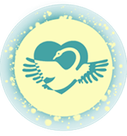
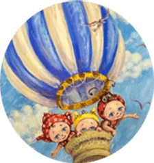
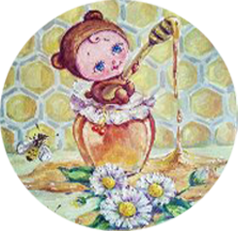
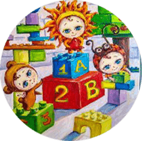

Что такое Гуманная Педагогика?
Гуманная Педагогика- это теория и творческая практика воспитания личности в Ребенке. Гуманные педагоги верят, что каждый Ребенок- это явление; его возможности безграничны и он несет в себе определенную миссию для человечества
Основные идеи Гуманной Педагогики:
- Воспитание Ребенка взрослым, начиная с воспитания самого себя
- Духовная общность воспитателя и Ребенка
- Сотрудничесвтво и сотворчество между воспитателем, Ребенком и родителями
- Непосредственность и сердечность
- Забота об облагоражевании души Ребенка
- Предоставление права выбора
- Руководство принципом творящего терпения в отношениях с детьми
Основные аксиомы Гуманной Педагогики:
- Любовь воспитывается любовью
- Доброта воспитывается добротой
- Личность воспитывается личностью
Главная цель Гуманной Педагогики:
Воспитание благородства и великодушия в подрастающем поколении. Процесс воспитания основавыется на главных потребностях Ребенка: в развитии,взрослении и свободе.
Наша история
История появления в Одессе, детского сада Гуманной Педогогики, тесно связана с личной историей семьи Евгении и Александра Грабилиных, основателей «Города Солнца». Воспитание собственных троих детей привело к близкому знакомству с идеями Гуманной Педагогики, а в будущем и с семьей Амонашвили. Александр и Евгения стали учениками Шалвы Александровича и закончили Высшую Школу Амонашвили.
Погружение в духовную среду помогло осознать, что знания должны быть сутью педагогического процесса не только в школах, но и в детских садах, а то и в утробе матери. Именно такая цель была поставленна в октябре 2019г. на семенаре Ш. А. Амонашвили «Искусство дошкольного воспитания», куда были приглашены представители всех дошкольных учреждений г.Одессы. Очевидно, что реализовать Гуманную Педагогику в чистом виде, в педагогическом процессе, возможно только лишь начиная с чистого листа, поэтому Шалва Александрович дал благословение на открытие детского садика в нашем городе, тем людям, которые искренне верят в ее силу и строят свою жизнь на основании духовно-нравственных законов.
Для родителей!
В основе Гуманной Педагогики лежит треугольник сотрудничества: педагог-ребенок-родитель. Наша общая задача помочь детям найти свой путь в этой жизни и «расправив крылья», реализовать свои безграничные возможности. Мы преглашаем наших родителей на регулярные родительские встречи, где мы поднимаем насущные вопросы, связанные с самоусовершенствованием и воспитанием, вместе ищем ответы на них.
Если Вы чуствуете, что Гуманная Педагогика импонирует Вам и Вы бы хотели, чтобы она стала и Вашим образом жизни, тогда приглашаем Вас в гости.
Как мы познаем мир?
Педагоги в детском саду Город Солнца помагают детям познавать мир через все грани образовательного процесса: развитие речи, погружение в иностранную языковую среду, построение логико-матемматического мышления, увлеченность творческим процессом, участие в играх и общение не только со сверсниками, но и детьми старшего и младшего возрастов.
Как мы проводим свой день
В детском саду «Город Солнца» вся надежда на реализацию идей Гуманной Педагогики возлагается на личность воспитателя и только потом на методическую систему. Наши дети воспитываются образами, которые мы, взрослые, им предлагаем в течении дня. Воспитатели отводят большое колличество времени для индивидуальной беседы с каждым Ребенком. Именно так зарождается духовная общность между взрослым и Ребенком, что дает со временем свои плоды и в образовательной работе. Ключом познавательного процесса Гуманная Педагогика принимает игру. «Игра - это искра, зажигающая огонек пытливости и любознательности» (В.А. Сухомлинский)
Что мы кушаем?
Питанию в нашем саду уделяется особое внимание. Мы создали современный кухонный блок для обеспечения автономного 5-ти разового питания для детей в течении дня. Ежедневно дети получают полноценный рацион, с учетом всех потребностей растущего организма. У детей всегда в доступе чистая питьевая вода и обязательная фруктовая пауза по сезону. Мы учитываем состояние здоровья каждого малыша, поэтому в случае необходимости предоставляем индивидуальное альтернативное меню. Для наших детей готовит повар, вкладывая в каждую порцию частичку своей доброй и светлой души, и хорошего настроения!
Ежедневно мы проводим игры:
- Обучающие с использованием дидактического материала на базе программы «Впевнений старт», которая рекомендована Министерством Образования Украины, для детей от 3 до 6 лет
- Развивающие на сообразительность, логику, эрудицию, смекалку и рассудительность
- Коллективные для воспитания сотруднечества и взаимопонимания, поиска компромисса и поддержки друг друга.
Наш день состоит из радости познания, радости дружбы и радости игры. Встречаем детей с 8:00, провожаем в 19:00
О Городе Солнца
- 
Что такое Гуманная Педагогика?
Наша история
Документи
Для родителей
Приходите в гости !
г. Одесса, ул. Лядова 12 (угол Китобойной)
Группы
ясли
2-3 годика (до 12 человек)
младшая
3-4 года (до 14 человек)
средняя
4-5 лет (до 14 человек)
старшая
5-6 лет (до 16 человек)
- 
Как мы познаем мир
Как мы проводим свой день
- 
Что мы кушаем
- 
Наши игры